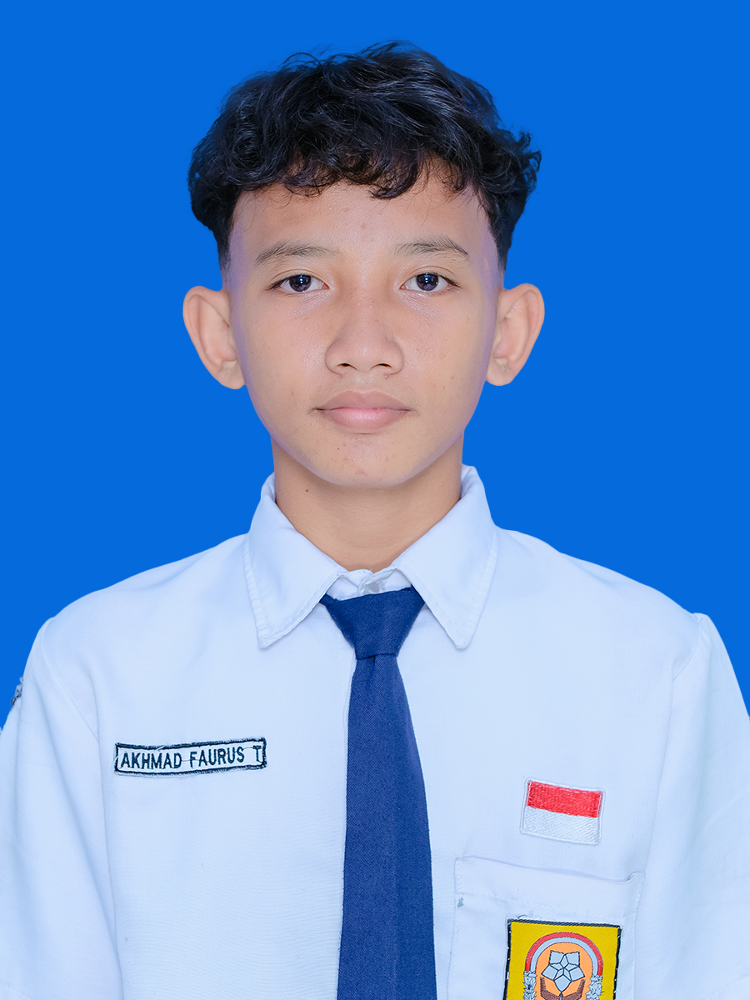

Halo, saya Fariz! - WEB DEVELOPMENT
Siswa kelas 10 SMKN 1 Pasuruan, calon Junior Web Developer di Kelas Industri UBIG.
Lihat Proyek SayaTentang Saya
Saya tinggal di Pasuruan dan senang mencoba hal baru di dunia teknologi. Saya ingin membuat website yang bermanfaat untuk sekolah dan UMKM di sekitar rumah.
Hobi
- Bermain sepak bola
- Membaca manga
- Bermain minecraft
Cita-cita
Menjadi Full Stack Web Developer.
- Menuntaskan Kelas Industri UBIG sampai Semester 4
- Magang di perusahaan teknologi
- Bekerja sebagai Web Developer
Keahlian
- HTML dasar
Jadwal Belajar
| Hari | Waktu | Kegiatan |
|---|---|---|
| Senin | 19.00 - 20.00 | Membaca ulang modul |
| Rabu | 19.00 - 21.00 | Mengerjakan tugas praktik |
| Jumat | 19.30 - 20.30 | Merekam video dan menulis laporan |